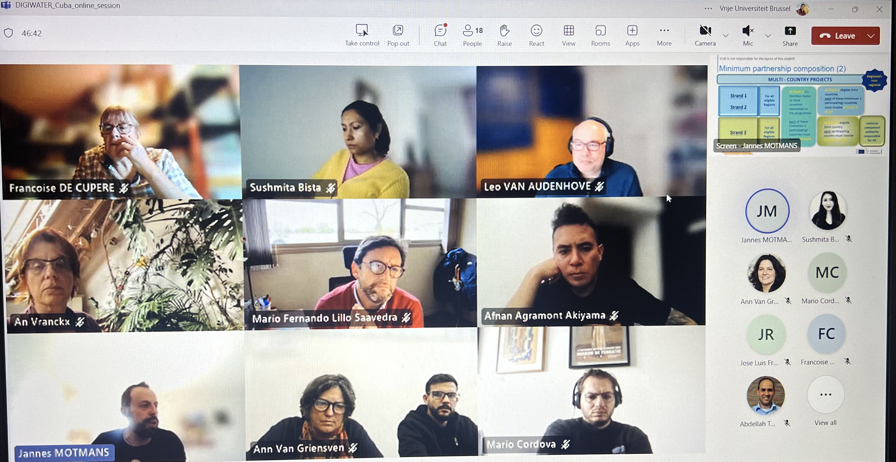

June 2, 2025 – VUB: Workshop on Citizen Science for Water Quality: Shaping Action. The session included planning for DIGIWATER activities, and logistics for CUBA.
June 3–5, 2025 – Delft: DIGIWATER team participated in the Citizen Science for Water symposium, contributing to international dialogue on community engagement and data sharing.
June 6, 2025 – Paris: Participation in the UNESCO-IHP Drought Symposium and the Science for Water Security workshop organized by VUB. Key contributions were made to ongoing UNESCO projects.
Online kickoff meeting in September 2025
On Friday, 26 September 2025, the DIGIWATER project held an online kickoff meeting with the participation of 23 people including team members from Belgium, Cuba, Ecuador, Peru, Chile and South Africa.
During the official launch of the project, introductory presentations on two key funding opportunities: VLIR-UOS and Erasmus+, and details about the agenda in Cuba were discussed.
